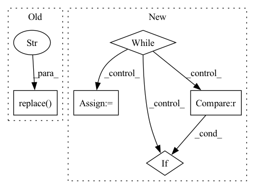

Pattern ID :37355
Before Change
for i in range(batch_size):
mcfile = self.src_mc_files[i]
filename = basename(mcfile).split("-")[-1]
wavfile_path = join(self.src_wav_dir, filename.replace( "npy", "wav" ) )
batch_data.append(wavfile_path)
After Change
batch_data = []
i = 0
while i != batch_size:
wav_file = self.src_wav_files[i]
filename = basename(wav_file)
num = filename.split(".")[0].split("_")[1]
for j in range(len(self.trg_wav_files)):
trg_wav_file = self.trg_wav_files[j]
trg_filename = basename(trg_wav_file)
trg_num = trg_filename.split(".")[0].split("_")[1]
if num == trg_num:
batch_data.append(wav_file)
break
elif j == len(self.trg_wav_files) - 1 :
batch_size += 1
i += 1
return batch_data
In pattern: SUPERPATTERN
Frequency: 3
Non-data size: 5
Instances Fragment ID: 107498760
Project Name: samuelbroughton/stargan-voice-conversion-2
Commit Name: 26484a2db5a00247535c7ec7c1f97c10e711e022
Time: 2020-09-01
Author: broughtonjsam@gmail.com
File Name: convert.py
M Class Name: ConvertDataset
N Class Name: ConvertDataset
M Method Name: get_batch_test_data(2)
N Method Name: get_batch_test_data(2)
M Parent Class: object
N Parent Class: object
M File Name: convert.py
N File Name: convert.py
M Start Line: 47
M End Line: 54
N Start Line: 51
N End Line: 71
Before Change
while mention and idx < len(tokens):
current_token = tokens[idx]
if current_token in mention:
mention = mention.replace( current_token, "" )
idx += 1
assert (
not mentionAfter Change
current_token = tokens[idx]
current_mention = mention
jdx = idx
while (
current_mention.startswith(current_token)
and current_mention and jdx <= len(tokens)
):
current_mention = current_mention[len(current_token) :]
current_mention = current_mention.lstrip()
jdx += 1
if jdx < len(tokens) :
current_token = tokens[jdx]
if not current_mention: Fragment ID: 107498779
Project Name: recognai/rubrix
Commit Name: a203193b2a8e55a04acbc49428efa8aeb5fc3345
Time: 2021-05-03
Author: daniel@recogn.ai
File Name: src/rubrix/server/tasks/token_classification/api/model.py
M Class Name: CreationTokenClassificationRecord
N Class Name: CreationTokenClassificationRecord
M Method Name: check_annotation(3)
N Method Name: check_annotation(3)
M Parent Class: Subscript
N Parent Class: Subscript
M File Name: src/rubrix/server/tasks/token_classification/api/model.py
N File Name: src/rubrix/server/tasks/token_classification/api/model.py
M Start Line: 104
M End Line: 112
N Start Line: 104
N End Line: 124
Before Change
file_description = ("\n"
+ " Path: " +
video_path.replace( video_name, "" ) + "\n\n"
+ " File: " + video_name + "\n\n"
+ " Resolution: " +
str(width) + "x" + str(height) + "\n\n"After Change
video_name = str(path_as_list[-1])
// 2) get first frame of the video
while (cap.isOpened()):
ret, frame = cap.read()
if ret == False :
break
cv2.imwrite(fist_frame, frame)
break
cap.release()
// 3) resize the frame to fit the UI
image_to_show_resized = resize_image_to_show(fist_frame)
// 4) show the resized image in the UI
image = tk.PhotoImage(file = image_to_show_resized)
drag_drop_and_images = ttk.Label(root,
image = image,
ondrop = function_drop,
anchor = "center",
relief = "flat",
justify = "center",
background = background_color,
foreground = "/�")
drag_drop_and_images.place(x = 30 + left_bar_width + drag_drop_width/2 - show_image_width/2,
y = drag_drop_height/2 - show_image_height/2 - 15,
width = show_image_width,
height = show_image_height)
// 5) remove the temp first frame
os.remove(fist_frame)
// 6) create string video description
file_description = ( video_name + "\n"
+ "[" + str(width) + "x" + str(height) + "]" + " | " + str(minutes) + "m:" + str(round(seconds)) + "s | " + str(num_frames) + "frames | " + str(round(frame_rate)) + "fps")
video_info_width = drag_drop_width * 0.8
video_info_space = ttk.Label(root,
text = file_description, Fragment ID: 107498769
Project Name: djdefrag/qualityscaler
Commit Name: 66b6f13eca96c3a97a48871850754b01b7403ab2
Time: 2022-06-02
Author: jjluca96@gmail.com
File Name: QualityScaler.py
M Class Name: AnonimousClass
N Class Name: AnonimousClass
M Method Name: show_video_info_with_drag_drop(1)
N Method Name: show_video_info_with_drag_drop(1)
M Parent Class:
N Parent Class:
M File Name: QualityScaler.py
N File Name: QualityScaler.py
M Start Line: 1081
M End Line: 1126
N Start Line: 1128
N End Line: 1198